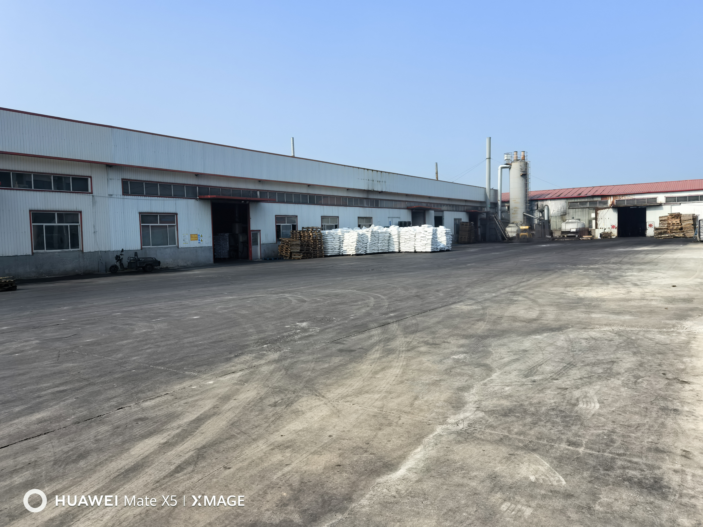
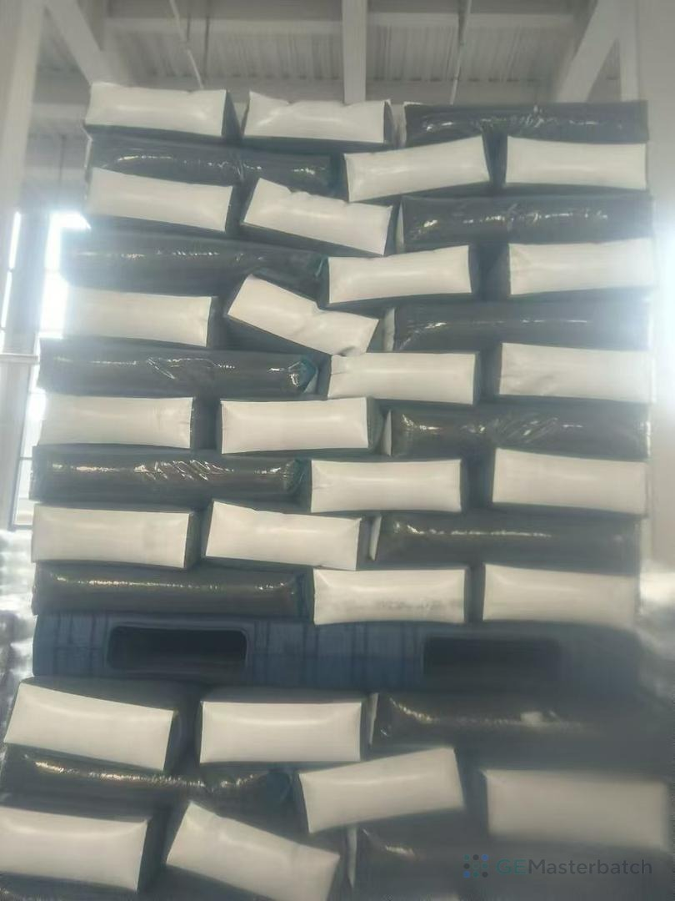
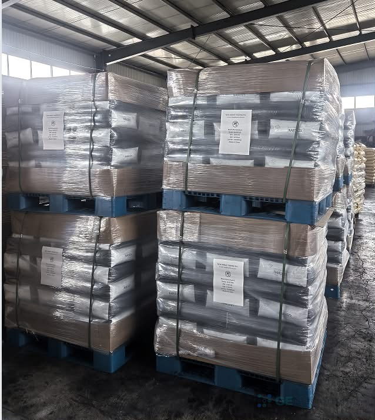
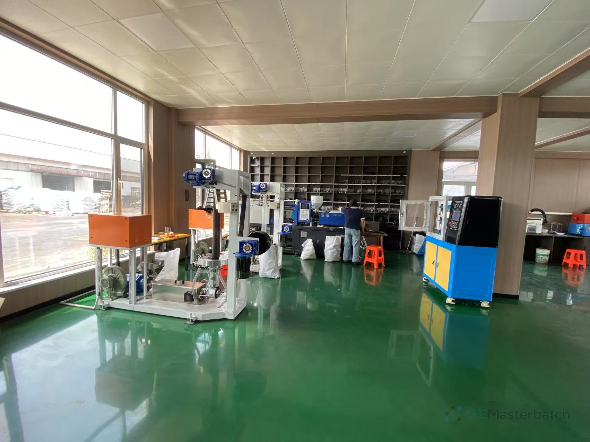
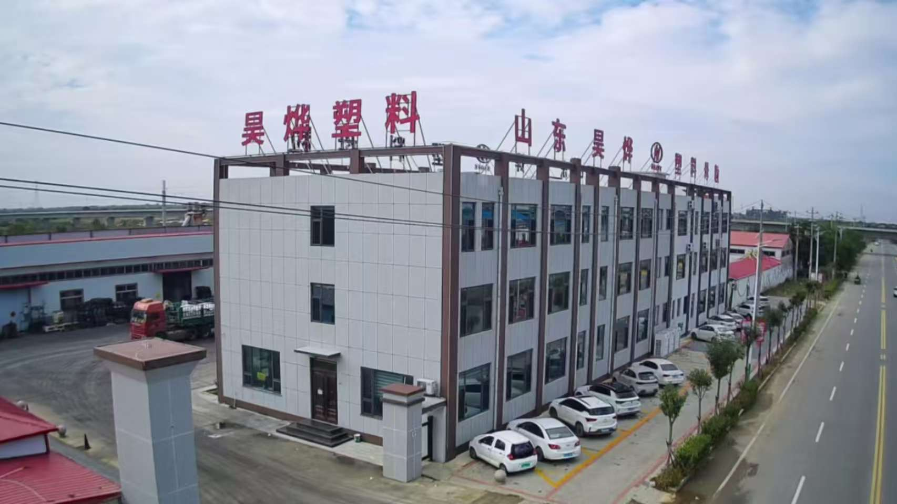

Desiccant Masterbatch for Moisture-Exposed Plastics
DM2476G is a 75.9% grey CaO desiccant masterbatch in a 24% recycled PE carrier for moisture that still reaches injection, extrusion and film blowing after storage and drying controls.
The current TDS lists no CaCO3 filler, 0.10% maximum moisture and a recommended starting dosage of about 1%. The CaO reacts with water in the process instead of leaving that moisture to flash into steam in the barrel.

A desiccant masterbatch is a process decision.
It is selected when moisture reaches the melt, not as a pigment or an anti-foam chemistry. The first review is the resin and storage history; the grade follows.
Calcium oxide reacts with water to form calcium hydroxide, so free moisture that would otherwise become steam can be chemically bound during processing. The TDS positions DM2476G for general use in injection molding, extrusion and film blowing.
A drying pellet that arrives already wet has spent part of its CaO capacity. DM2476G is packed in 5 kg vacuum PE bags, five bags per 25 kg carton, and the packaging should stay sealed until use. It does not replace dry resin storage or pre-drying.
Current documented grade
DM2476G
75.9% CaO
24% rPE
1% start
Grade-specific TDS values. Confirm the controlled document before production approval.
What must be clear before a desiccant grade is selected
The useful inquiry identifies where the moisture comes from and what the finished product must tolerate.
State the base resin, regrind share, storage history, process and defect, then add the planned dosage, color tolerance, recycled-carrier rules and documents required for the exact market.
DM2476G's 24% recycled PE carrier is part of the product scope. Confirm that the process, customer specification and end-use program accept it before the grade is standardized.


The review brief
- Resin
- PE, PP, regrind and storage
- Process
- Film, molding or extrusion
- Defect
- Bubbles, voids, splay or surface
- Scope
- Dose, color, packing and documents
DM2476G at a glance
The current TDS lists a high CaO load, a recycled PE carrier, zero CaCO3 filler and a 1% starting point. These facts still need confirmation against the resin, process and buyer rules.
| Item | TDS value | What to review |
|---|---|---|
| Appearance | Grey granule | Color tolerance at the planned dose |
| CaO | 75.9% | Moisture source and required trial result |
| Carrier | 24% recycled PE | Buyer recycled-content rules and resin compatibility |
| Filler | 0% CaCO3 | Product design and comparison brief |
| Moisture | 0.10% max | Incoming control and sealed storage |
| Dosage | 1% starting point | Controlled line trial and final acceptance |
| Packing | 5 kg vacuum bags | Opening, resealing and dry handling |
Do not turn a grade fact into a universal claim. The 75.9% CaO, 1% value and recycled carrier belong to the current DM2476G TDS, not every desiccant masterbatch.
Review the DM2476G product pageDesiccant masterbatch applications
The current TDS lists DM2476G for general use in injection molding, extrusion and film blowing. Confirm the moisture mechanism and any finished-product color effect in each process.
Moisture turns to steam under melt temperatures and can show up as bubbles, voids, splay or an unstable surface. Thin film and glossy molded faces reveal those defects first. Start with a controlled PE-compatible run and compare against the same material without desiccant.
What the material can and cannot solve
Keep moisture control, color and other process faults separate in the trial record.
Record the resin, regrind share, storage history, process and moisture symptoms. Keep the vacuum bag sealed until use, dose near the TDS 1% level and compare the run against the same material without desiccant. Check bubbles, voids, splay, surface, grey tint and processing stability before fixing the recipe.
- Pre-dryingStill first
- BubblesDiagnose the source
- ColorKeep separate
- ResultApprove on the line
Use the product page when the next step is a DM2476G sample or technical review.
Review the trial routeTDS, SDS and COA by exact grade
Request the current controlled DM2476G TDS first. SDS and COA availability should be confirmed for the exact lot, application and market.
- 01State the grade
Link the request to DM2476G and the current product route.
- 02State the application
Include resin, process, market and document purpose.
- 03Use controlled documents
Do not infer food contact, RoHS or REACH coverage from the category page.

Manufacturing context
GE CHEMICAL lists 12 production lines, annual capacity above 50,000 tonnes and service to more than 30 markets. Product evidence remains specific to the grade and application.
- Production lines
- 12
- Annual capacity
- 50,000+ t
- Markets
- 30+

Desiccant masterbatch FAQ
Questions buyers ask before a moisture-control trial.
A. Moisture control
When should I add desiccant masterbatch instead of only pre-drying resin?
Pre-drying and dry storage stay first. Consider DM2476G when moisture still reaches the process through washed regrind, outdoor storage, humid plant air or an open hopper. It is a processing safety net, not permission to ignore wet handling.
How does moisture create bubbles, splay and gels?
Water turns to steam at melt temperature. The steam can expand into voids, form splay marks or disturb the surface. DM2476G targets moisture reaching the melt; it does not remove contamination gels, trapped air or decomposition gas.
Is DM2476G an anti-foam or color grade?
No. It is a moisture-scavenging desiccant masterbatch. Removing moisture can reduce steam bubbles, but that is not the same function as anti-foam chemistry or a chemical foaming agent. The grey CaO is not a colorant.
Can I use DM2476G for injection molding?
Injection molding is listed on the TDS. Moisture can cause splay, silver streaks, bubbles or weak weld areas. Trial near 1% and check dispersion, surface and grey tint while separately checking venting, temperature and fill.
B. DM2476G
What does the DM2476G TDS list?
DM2476G is a grey granule with 75.9% CaO, a 24% recycled PE carrier, no CaCO3 filler, 0.10% max moisture, 1% recommended starting dosage and general use in injection, extrusion and film blowing.
What is the recommended dosage?
The TDS lists about 1% as the recommended starting dosage. Adjust only after a controlled trial against the same material without desiccant. More concentrate is not a substitute for correcting wet storage or another process fault.
What carrier resin does DM2476G use?
The carrier is 24% recycled PE. Confirm that the process, customer specification and end-use program accept a recycled carrier before standardizing the grade.
Is DM2476G suitable for food-contact applications?
The current TDS does not list Food Grade or a named food-contact regulation. Do not assume FDA, EU or customer approval. Request the current SDS and any available declarations for the exact grade, application and market.
Start with the moisture source.
Share the resin, regrind, process, storage conditions, current defect and document needs. The team can review whether DM2476G is a useful trial route.
Base resinRegrind shareCurrent defectProcess